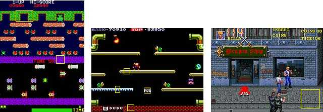
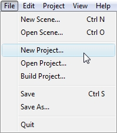
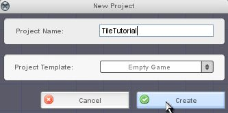
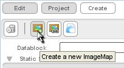
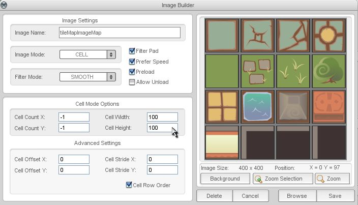
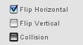

Torque 2D - Tile Map Tutorial
The TileMap Builder
The main use of the T2D Tile Map Builder is to make the map of your game world. Any 2D game that happens in some sort of a world will use a map of some kind, whether it is a top-down map (e.g. Frogger), side-view map (e.g. Mario Bros.), or something more complicated like a "3/4 view" map (e.g. Double Dragon). In almost every case, the map used for a 2D game will have repeating elements. Using the examples above, here are screenshots with some repeating elements outlined in yellow:

Figure 1
Using a tilemap to create repeating elements has many advantages. One of the most important of these is that memory is used more efficiently... rather than having to load a large graphics file with your whole map in it, your game refers to a few small files that are repeated. This decreases overall file size for your game as well, which means faster download time for online games. Another advantage is the ease of level construction. When you use a tilemap system, you have a level construction set that makes initial construction and changes very quick and simple.
A good, standard practice for T2D when starting something new is to create a new project. Load up the Level Builder and click on File...New Project (figure 2). Feel free to name this new project whatever you wish, the example used here will be TileTutorial. Our Template will remain Empty Game (figure 3).
|
 Figure 2 |
 Figure 3 |
After your project is created, navigate to your T2D\resources\starterArt\images folder and copy the tileMap.png image into your games\TileTutorial\game\data\images folder.
Inside the Level Builder again, click on the "Create a new ImageMap" button found in the Create Tab (as shown in Figure 4).

Figure 4

Figure 5
To create a new tilemap, select the Create tab on the right side of the level builder, go to the Tilemaps section, and drag the object labeled newLayer.lyr into your level.
In the Scene View, your screen changes to the tilemap Edit View. You should see several properties specific to tilemaps as well. They are:
Auto Pan - This property specifies the speed at which the tilemap will automatically scroll the tiles across its surface. This makes your tilemap operate much like a T2D Scroller object. Try putting 10 in the Auto Pan X edit box. You'll see your tile layer moving along the X axis.
Pan Position - Directly sets the offset of the tiles on the surface of the tilemap. This has the same sort of effect as Auto Pan, but allows you to set the tilemap's position by hand, rather than have it automatically move.
Wrap - Specifies whether or not the tiles should be repeated across the surface of the tilemap. You probably noticed when playing with Auto Pan and Pan that the "test textures" don't go on forever. The Wrap property lets you set your tilemap to repeat, along whichever axes you choose.
Tile Count - The number of tiles in the tilemap.
Tile Size - The dimensions of each tile in the tilemap.
For this tutorial we will be using the default tile count and tile size. If you changed the Pan or Auto Pan values, set them all back to zero.
To actually paint tiles on your new tilemap, or any existing tilemap, and set various tile properties, you will need to remain in the tilemap editing tool. If you accidentally left the tile editor, you need to reactivate it. To do this, either click on the Edit Tile Layer button in the edit panel, or click on the widget labeled Edit This Tilemap that appears when hovering over a selected tilemap.
You will now see a new section in the Edit tab of the level builder (Figure 6). It is important to note that tilemap editing mode is a special level builder mode, much like defining world limits or collision boxes. In tilemap editing mode, you can only work on the currently selected tilemap. In order to return to normal level builder editing mode, you must press either Escape or Enter.
Figure 6
The two buttons at the top allow you to save changes made to the tilemap, or load a previously saved tilemap into your tilemap object. The toolbar just below contains five tools for manipulating the tilemap. They are (from left to right):
Selection Tool - Clicking on a tile will select it. Double clicking will select all connected tiles with the same image. This is used in conjunction with the Apply To Selection button at the bottom of the editor to quickly assign properties to several tiles at once.
Paint Tool - The paint tool will apply the various selected settings to any tile that is clicked on.
Flood Fill - This works like the paint tool, except that the selected settings are applied to all connected tiles using the same image.
Eye Dropper - Clicking on a tile with this tool will copy all of the tiles settings to the paint tool.
Eraser - Any tile clicked on will have all its settings cleared.
The Selection, Paint, and Eraser can all be used to perform their corresponding action in a selected rectangle. To do this, hold down the Shift key, then click and drag the mouse. A rectangle will be drawn on the screen around the area that the mouse is dragging. When you release the mouse, the tools action will be performed on all tiles touching this rectangle.
To see an example of a couple of these tools in action, select "tileMapImageMap" image in the Image drop down. Select the Paint Tool and draw some tiles on your tilemap. Now select the Eraser tool, and hold down Shift while dragging across the tiles you drew. Release the mouse button, and your tiles will be erased.
Now that you have an idea how the tools work, let's examine the different properties that you can set in each tile. Ignoring the Brush drop down list for now, the properties that can be applied to each tile are as follows:
Image - The imagemap used to create your tilemap.
Frame - Clicking this will open a tile palette. These are the individual cells you created when made your imagemap. The frame number increases from left to right, top to bottom.
Tile Script - The text to pass to the onTileScript callback when the tile is first displayed on the screen.
Custom Data - This is a text field that can be defined per tile to store whatever information you want.
Flip Horizontal - With this checked, the image on the tile will be flipped horizontally.
Flip Vertical - With this checked, the image on the tile will be flipped vertically.
Collision - Check this to enable collisions on the tile.
Below these properties, there is a preview window that displays the current settings visually. In this window, the collision polygon for the tile can be defined by clicking and dragging points with the mouse. Note that you will only see the collision polygon for a tile if the Collision checkbox is set and you have defined two or more points. You will also notice that when in tilemap editing mode, you can see the collision polygons for all tiles in the selected tilemap.
It is important to note that this tile editor does not work like a standard painting program. You are not just painting images onto the tiles, but rather you are painting properties. The properties you are painting are the 6 listed above. Because of this, each property can be set to No Change. If, for example, you wanted to change the Image of a tile, but nothing else, you would set the Image drop down to your image of choice, then set the other properties to No Change. Any property not set to No Change will be applied by the Paint and Flood tools.
In the case of the drop down lists, simply select No Change. For the special tilemap three-state checkboxes, you will need to select the No Change state. In Figure 7, the top checkbox is in the True state, the middle checkbox is in the False state, and the bottom checkbox is in the No Change state.

Figure 7
A set of tile properties can be saved in a brush. With this system, you can define several tile configurations as brushes and quickly switch between them. To create a brush, type the name in the text box next to the Save Brush button. Then, click on the Save Brush button. Now, the name of the brush will appear in the drop down list labeled Brush at the top of the tilemap edit panel. Any time you would like to use this brush, on this or any other tilemap in your project, you can select it from the drop down list and start painting.
The onTileScript callback is called on a tile by the engine the first time the tile is rendered on the screen. The callback looks like this:
t2dTileMap::onTileScript(%map, %layer, %tile, %script);
The parameters passed to the callback are as follows:
%map - The tilemap containing the layer of the tile.
%layer - The layer object containing the tile.
%tile - The tile that the script is being called on. This is the logical position of the tile in the layer.
%script - This is the text that is supplied to the tile layer during editing in the Tile Script field.
Tile scripts can be used in many different situations. They are especially useful as markers for more complicated effects that you can generate in script, such as spawn points.
Custom data can be stored on each tile to store information specific to that tile. For instance, you might want to mark a tile as a "lava" so that you can have your player object take damage when it touches a "lava" tile. This can be especially useful if you have 5 lava tiles with different graphics. The tile Custom Data can be accessed using a tile's location in a tilemap using the following function:
t2dTileLayer::getTileCustomData(%tileX, %tileY);
Note that the onCollision function automatically passes tile locations in the %srcRef and %dstRef arguments.
This has been a basic introduction to T2D's Tile Map editing system. There are a great many uses for tilemaps in both side-view and top-view style games. And remember, you can use animations for tiles as well as static image maps.
Happy Tiling!
Revision 3.1